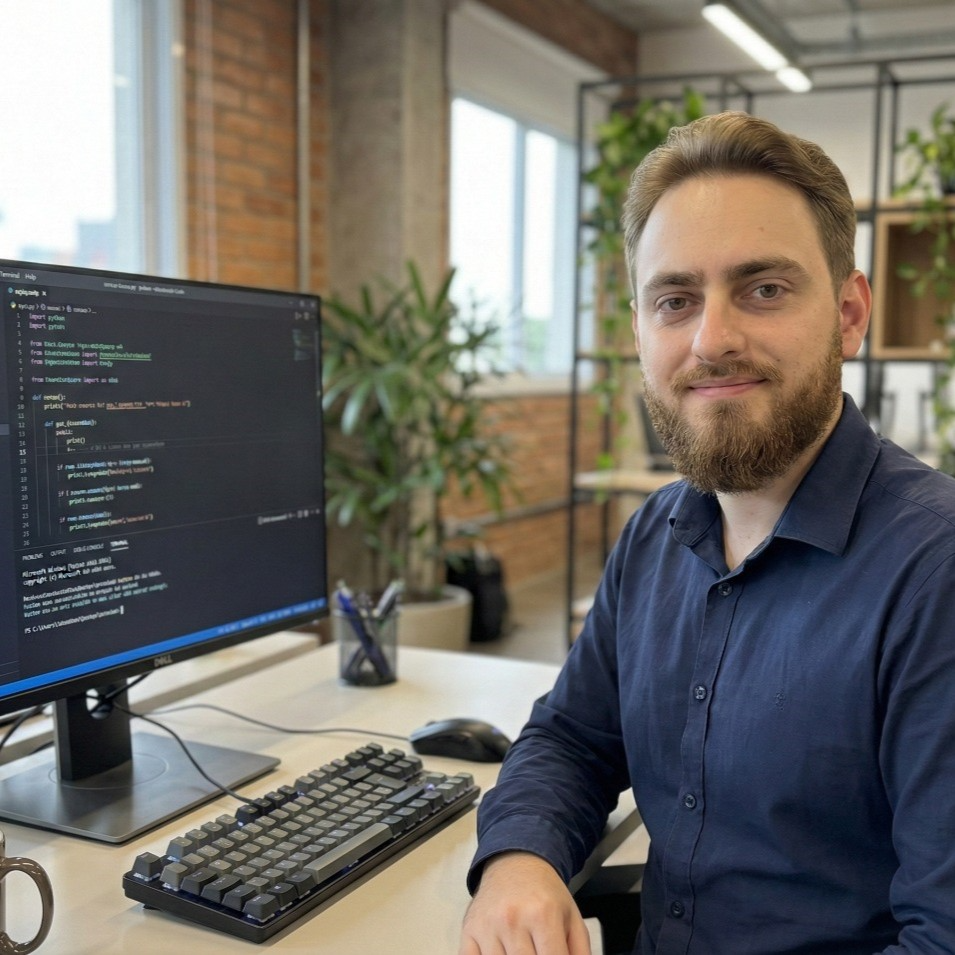

- Home
- >
- Currículo
Currículo
Dados Pessoais

Nome:
Alison Luan Fernandes Galvani
Data de Nascimento:
15/09/1994
Residência:
Maringá - PR, Brasil
Sobre Mim
Engenheiro de Software com 7 anos de experiência em desenvolvimento web full stack, arquitetura de sistemas, liderança técnica e construção de soluções críticas operando 24/7/365, atendendo mais de 20 mil usuários ativos.
Forte atuação em Node.js, JavaScript, TypeScript, PHP, SQL, React e integração com hardwares, comunicação entre sistemas, com experiência comprovada em projetar arquiteturas escaláveis, liderar equipes multidisciplinares, coordenar projetos e entregar sistemas de alta confiabilidade com SLA de 99%.
Profundo conhecimento em segurança, integração em tempo real (WebSocket e SSE), metodologias ágeis, revisão de código e melhoria contínua de processos. Experiência adicional com contêinerização (Docker), pipelines de CI/CD (GitHub Actions), Nginx, PM2, microsserviços e TDD (Test-Driven Development), Domain-Driven Design (DDD), princípios de Clean Architecture e SOLID, microserviços e automação de deploy em ambientes Linux, além de conhecimentos práticos em cloud computing (AWS e serviços correlatos).
Capacidade reconhecida de transformar problemas complexos em soluções robustas, eficientes e prontas para produção. Interesse em atuar em produtos globais com desafios complexos e grande volume de dados.
Educação
2020-2021
Curso de Inglês módulo básico - Cultura Inglesa Maringá
2015-2019
Bacharelado em Engenharia de Software - Unicesumar (Maringá).
2012-2013
Web Design - Datacomp Brasil (Maringá)
2010-2012
Ensino médio - Colégio estadual Dr. Gastão Vidigal (Maringá)
2009-2011
Hardware avançado - Microcamp (Maringá)
Experiência de Trabalho
One Port Tecnologia em Serviços Ltda Engenheiro de Software / Desenvolvedor Sênior / Gerente de Projetos (Maringá - PR) Set/2019 – Out/2025
Evolução de carreira: Ingresso como Desenvolvedor Júnior (2019), promoções para Desenvolvedor Júnior II (2022), Desenvolvedor Sênior I (2023) e Desenvolvedor Sênior II (2024), assumindo progressivamente responsabilidades de arquitetura, liderança técnica, coordenação de equipe com 7 desenvolvedores e gestão de projetos.
Responsável por projetar a arquitetura de sistemas web (frontend, backend e banco de dados), definir componentes, módulos, integrações entre serviços e comunicação com outros sistemas e equipamentos. Atuação com Node.js, JavaScript, PHP, SQL, HTML, CSS, React e Vanilla JS.
Atuação em sistemas de segurança e missão crítica com alta disponibilidade (24/7/365), incluindo implementação de medidas de segurança, controle de acesso, autenticação, criptografia e integração com hardware.
Arquitetura, desenvolvimento e testes de sistemas de controle de acesso integrados a dispositivos de diversos fabricantes (Intelbras, Hikvision, Control iD, Avicam, Nice, PPA, entre outros), garantindo interoperabilidade, confiabilidade e alta disponibilidade na operação.
Criação de APIs para integração com sistemas de terceiros e implementação de soluções em tempo real com WebSocket, conectando APIs e frontend para atualizações imediatas de informações críticas em ambientes que geram mais de 300 mil eventos por dia.
Arquitetura e desenvolvimento de uma solução proprietária, entregue em 3,5 meses, substituindo fornecedores terceirizados — resultando em economia de R$ 250 mil por ano e aumento de 42% na receita líquida anual da empresa.
Reestruturação completa da arquitetura de uma API Node.js diretamente em produção, alcançando latência inferior a 100ms e suportando mais de 3 milhões de requisições por mês.
Modelagem de dados poliglota, utilizando SQL (MySQL, SQL Server) para dados transacionais e MongoDB para armazenamento de logs, eventos e dados não estruturados de alto volume, otimizando o desempenho conforme o caso de uso.
Migração e desenvolvimento de módulos com TypeScript, adicionando tipagem estática ao código para reduzir bugs em produção; containerização de serviços com Docker, padronizando ambientes de desenvolvimento, homologação e produção; e uso de serviços AWS (EC2, S3, API Gateway) para hospedagem e exposição de APIs.
Criação de APIs e dashboards de BI para o setor de operações de sistemas de telefonia, reduzindo o tempo de diagnóstico de incidentes de 30 para 5 minutos.
Integração de inteligência artificial (OpenAI) para análise automatizada de logs, apoiando a tomada de decisão operacional da equipe.
Coordenação dos principais projetos de desenvolvimento da empresa, organização e distribuição de tarefas, acompanhamento de prazos e qualidade das entregas. Responsável por ensinar, treinar e orientar mais de 10 desenvolvedores juniores e plenos, estruturando processos de onboard, mentoria contínua e evolução técnica do time.
Implantação e fortalecimento da cultura de revisão de código, testes rigorosos e acompanhamento de correções de bugs, garantindo qualidade, manutenibilidade e aderência a boas práticas.
Aplicação de TDD (Test-Driven Development) em módulos críticos do sistema, elevando a cobertura de testes e reduzindo regressões nas releases quinzenais.
Definição e acompanhamento de Sprints (Scrum/Kanban), montagem de Sprints mensais com o CEO e Gerente Operacional, coordenação de reuniões mensais com toda a empresa para apresentação das entregas do desenvolvimento e alinhamento com demais áreas.
Levantamento de métricas individuais e do setor de desenvolvimento para avaliar produtividade, qualidade, evolução profissional e apoiar decisões de gestão (novas contratações, mudanças de processo, priorização de demandas).
Responsável pela geração quinzenal de versões de todos os sistemas, publicação de novas releases aos clientes, controle de mudanças e versionamento com Git.
Atuação em campo para análise e resolução de problemas diretamente em ambientes de clientes, definição de correções rápidas e estruturadas, garantindo continuidade da operação e satisfação dos usuários finais.
Produção de documentação técnica detalhada (manuais, descrições de código, explicações de funcionamento de módulos e integrações) para apoiar o time técnico e facilitar a manutenção futura.
Elotech Gestão Pública Ltda Estagiário em Desenvolvimento / Desenvolvedor Júnior (Maringá - PR) Jul/2018 – Jul/2019Desenvolvimento de novas funcionalidades, manutenção e correção de problemas no módulo contábil usando Delphi.
Desenvolvimento, manutenção e correção de funcionalidades no módulo Portal da Transparência, usando Java, Spring Boot e React.
Implementação de testes automatizados de frontend e backend para o módulo Portal da Transparência, contribuindo para a estabilidade das entregas.
Uso de boas práticas de programação, controle de versão e participação em Sprints mensais seguindo metodologia Scrum.
Efetivado de Estagiário para Desenvolvedor Júnior em 9 meses, em função da performance e qualidade das entregas.
Responsável por treinar colaboradores experientes em Delphi para assumirem manutenção e evolução do módulo Portal da Transparência (Java/React), garantindo continuidade do projeto após sua saída.
One Support Tecnologia Ltda Analista de Sistemas (Maringá - PR) Fev/2014 – Jul/2018Mesmo sem ocupar formalmente uma posição de desenvolvedor, identifiquei uma lacuna crítica no atendimento ao cliente e desenvolvi de forma independente o "One Support Ticket App", utilizando Ionic e integração com o backend existente em PHP — reduzindo o tempo de resposta ao cliente em mais de 70% e elevando a taxa de resolução de chamados em até 24h de 46% para 89% em menos de um ano.
Suporte a sistemas (local e remoto) e atendimento Helpdesk para clientes de diferentes portes.
Configuração, suporte e manutenção de soluções de telefonia VoIP (Elastix, Issabel, Asterisk, gateways de telefonia, telefones IP).
Configuração e administração de redes (infraestrutura, gerenciamento, firewall, Mikrotik), garantindo estabilidade e segurança do ambiente.
Configuração, suporte e gerenciamento de servidores e bancos de dados (SQL básico).
Suporte, configuração e gerenciamento de soluções de monitoramento de imagens (DVRs, softwares de monitoramento), integrando infraestrutura de rede, servidores e sistemas.
Projetos Pessoais e Autoestudo Contínuo
Fora do ambiente profissional, mantenho estudo e prática contínua com tecnologias modernas do ecossistema JavaScript/TypeScript, aplicadas em projetos pessoais como forma de me manter atualizado com o mercado.
Next.js: desenvolvimento de aplicações pessoais com renderização híbrida (SSR/SSG) e otimização de performance no frontend.
Nest.js: construção de APIs modulares seguindo arquitetura em camadas inspirada em princípios de Clean Architecture.
Habilidades
Tecnologias & Ferramentas
Node.js, JavaScript, TypeScript, PHP, React, HTML, CSS, SQL, MySQL, PostgreSQL, SQL Server, MongoDB, WebSocket, REST, Express, integração de sistemas multiplataforma, Docker, Docker Compose, Nginx, PM2, Git, GitHub Actions, CI/CD, Linux, Shell Script, Orientação a Objetos (OOP), Clean Architecture, Princípios SOLID, Domain-Driven Design (DDD), TDD (Test-Driven Development), Microsserviços, AWS (EC2, S3, API Gateway), Cloud Computing, automação de deploy, versionamento com Git, Jira, Scrum e Kanban.
Arquitetura e Design de Sistemas
Identificação e aplicação de melhores práticas em arquitetura de software para criar soluções robustas e escaláveis. Concepção de design system, arquitetura de frontend, backend e banco de dados, definindo relações entre componentes e comunicações com outros sistemas e módulos.
Avaliação e seleção de tecnologias, frameworks e ferramentas adequadas conforme requisitos técnicos e de negócio.
Modelagem de domínios de negócio complexos aplicando conceitos de Domain-Driven Design (DDD), alinhando o modelo de código à linguagem do negócio.
Desenvolvimento de Software
Criação de soluções web robustas, performáticas e com foco em experiência do usuário.
Implementação de medidas de segurança para proteção de dados sensíveis dos usuários, utilizando protocolos de encriptação compatíveis entre várias linguagens, autenticação JWT e MFA.
Proficiência em Node.js, JavaScript, TypeScript, PHP, React, HTML, CSS, SQL e MongoDB, aplicando o modelo de dados (relacional ou não relacional) mais adequado a cada tipo de projeto, com experiência em integração com sistemas e dispositivos de terceiros.
Integração de Sistemas e Hardware
Arquitetura, desenvolvimento, testes e implantação de sistemas de controle de acesso integrados com hardwares de diferentes fabricantes.
Experiência em arquitetar APIs para que sistemas de terceiros se integrem, ou para integrar sistemas próprios a plataformas externas.
Especialista em implementação de sistemas web com WebSocket, visando atualizações imediatas e em tempo real de informações críticas.
Liderança Técnica, Processos e Qualidade
Coordenação de equipes multidisciplinares, distribuição de tarefas e supervisão de entregas.
Implantação de cultura de revisão de código, boas práticas, testes e métricas de qualidade.
Condução de Sprints, reuniões executivas, alinhamento estratégico e apresentações periódicas de resultados.
Levantamento e análise de métricas de performance da equipe e dos sistemas para suporte à tomada de decisão.
Idiomas
Português — Nativo
Inglês — A2 (básico), em evolução contínua com foco em comunicação técnica para equipes internacionais.
Prêmios e Reconhecimentos
Vencedor do II Hackathon da Unicesumar – Categoria Protótipos (Set/2016).
Projeto aprovado para apresentação no XI EPCC – Encontro Internacional de Produção Científica (Out/2019).
Melhor TCC do curso de Engenharia de Software – Nota 9,5 (Nov/2019).
Melhor aluno do curso no 4º bimestre de 2019 – participação em evento institucional exclusivo da Unicesumar (Nov/2019).
Projetos Acadêmicos
Trabalho de conclusão de curso: “Implementação de um protótipo de ontologia para relatos de bug” (2019 – nota 9,5).
Publicação do artigo “Enhancing Bug Report Clarity and Efficiency Through Ontology Prototypes” na revista International Journal of Professional Business Review (JBReview), agosto de 2025.
Contato
Email: alisonfgalvani@gmail.com
LinkedIn: linkedin.com/in/alison-galvani
GitHub: github.com/AlisonGalvani
←Voltar ao início